壁纸贴图处理和上传
一、找到需要处理的壁纸贴图格式为JPG 尺寸为600*435mm
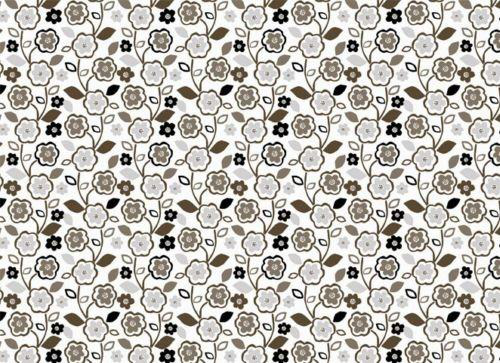二、放入到adobe photoshop做相应的处理
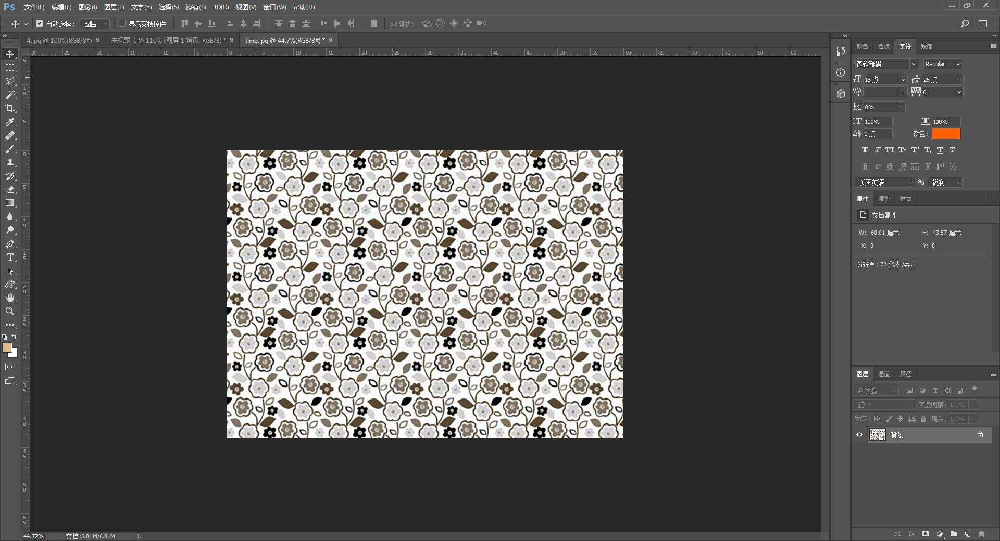三、查看贴图尺寸
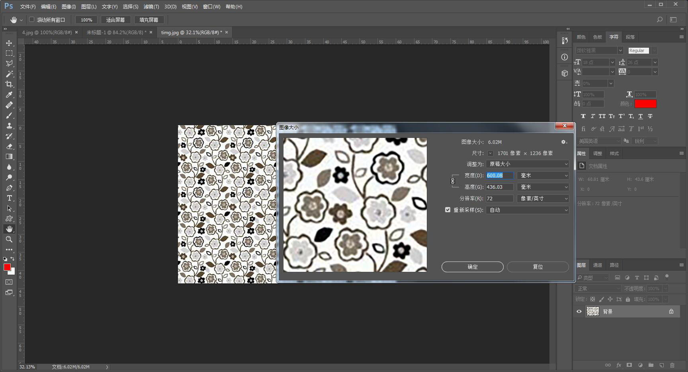四、修改完成后，新建空白文档，将贴图拖入新建文档里做处理
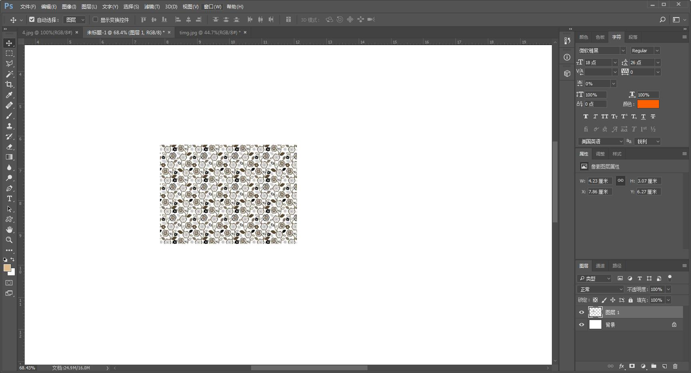 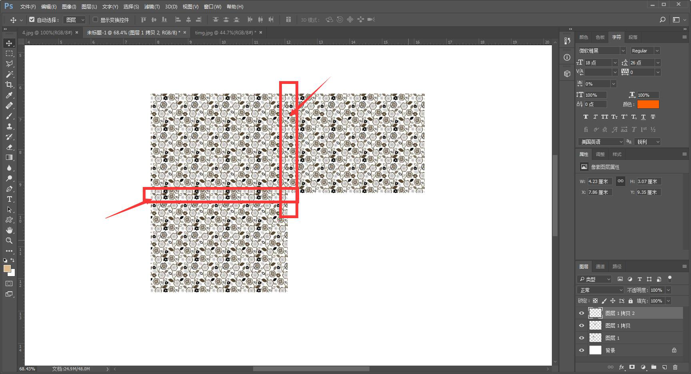1.1、复制贴图，右边和下边拼合出现不吻合缝迹
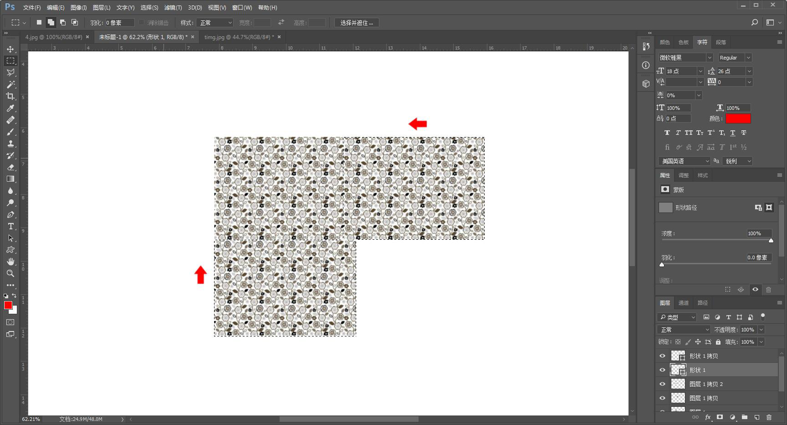1.2、需要将右边的贴图往左边的方向移动，一直找到吻合痕迹，建立选区将主贴图裁剪，下面也是一样，得到（如下图）
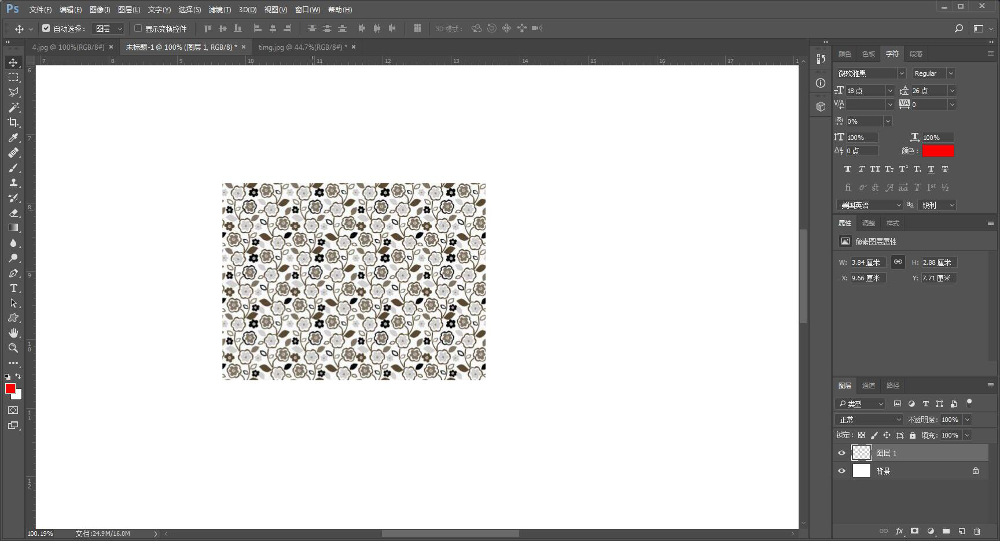1.3、由于裁剪，尺寸也变得小了一点，这时候再将它拖入原图文档里（如下图）
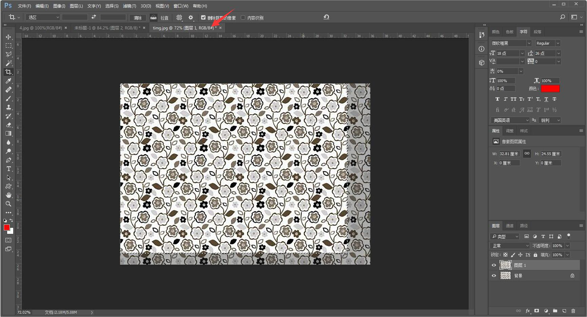1.4原图文档之后，左上角对齐，建立选取，将多余的布纹裁减掉，这时候查看它的修改后尺寸（如下图）
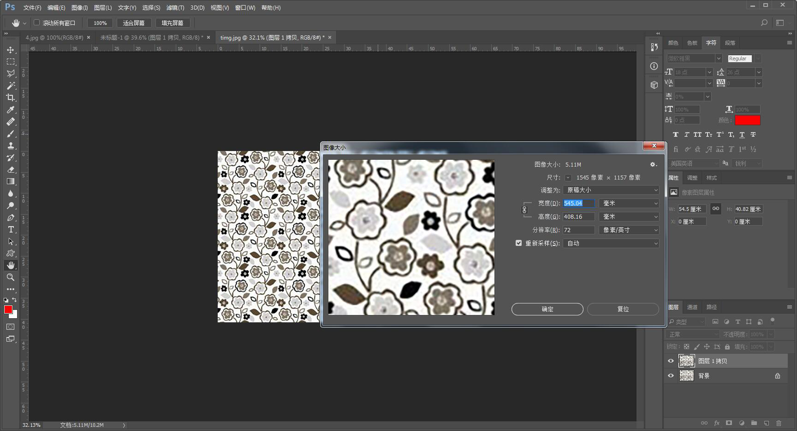查看或修改像素（不超过3M,分辨率不大于1024*1024）
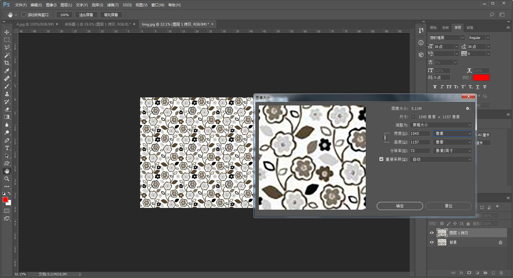 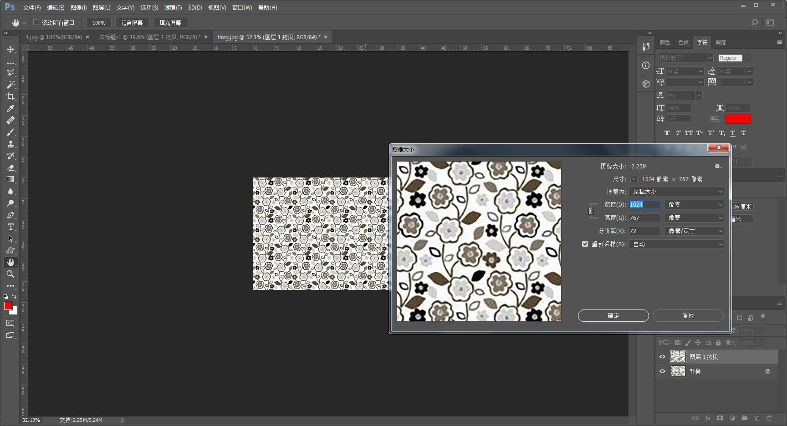五、后台上传贴图
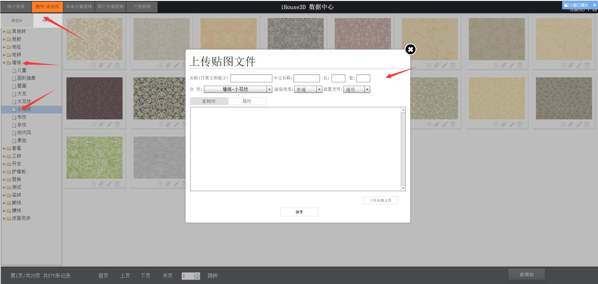登录后台之后，找到材料库/墙纸/小花，输入贴图信息
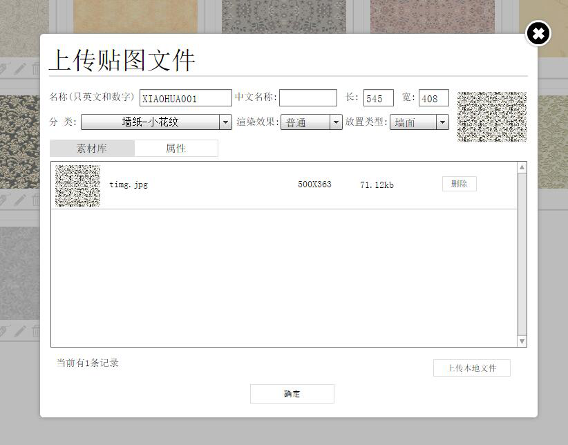输入名称或中文名名称，再输入裁剪后的尺寸（单位毫米），然后是选择渲染效果为普通（注：瓷砖为高光，地板为平光，墙纸为普通，地毯为哑光） 放置类型为墙面，最后选择贴图文件，点击确定完成

前端系统查看
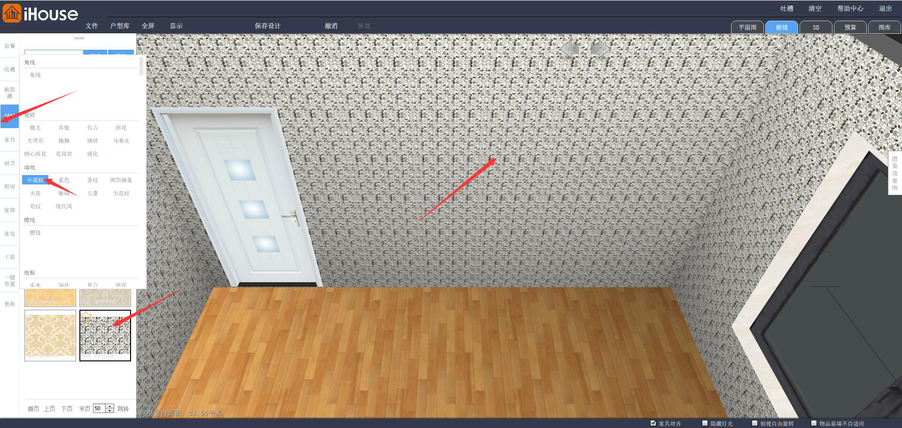尺寸：壁纸、瓷砖、地板、地毯贴图后台以实际尺寸输入、单位为毫米
渲染类型：壁纸为普通、瓷砖为高光、地板为平光、地毯为哑光
放置位置：根据贴图类型放置，也可选择通用
文件上传：文件不得超过3M分辨率不大于1024*1024